Azure DevOps meets GitHub, the path to AI powered SDLC
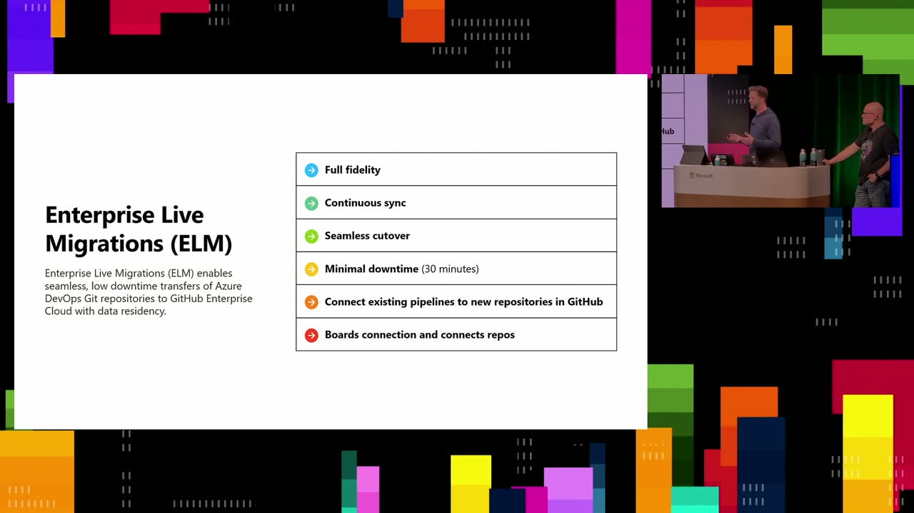
Chapters
Official description
Azure DevOps and GitHub are better together—and the integration keeps getting smarter. In this demo-heavy session, you’ll see how hybrid patterns that connect GitHub with Azure Boards and Azure Pipelines enable Agentic DevOps. See the all of the newest AI-powered capabilities in Azure DevOps. Plus, hear how Microsoft's engineering teams adopted this approach and what they gained. Seating for this session is first-come, first-served. Add it to your schedule to plan your day and arrive early to secure a spot.
Summary
Overview
Azure DevOps and GitHub are positioned as complementary platforms, with the integration between them serving as the on-ramp to an agentic software development lifecycle. The demo-heavy session shows how teams invested in Azure Boards, Pipelines, and Test Plans can harness GitHub Copilot's agentic capabilities, and previews new AI-powered features—code reviews, auto-fix, and a live migration tool—coming to Azure DevOps itself.
Key announcements
- Azure DevOps remote MCP server (~00:17:48
 m05s
m05s m10s
m10s p05s
p05s p10s): Two MCP servers (local and remote) now expose work items, repos, wiki, test plans, and pipelines; the remote server supports service principals, managed identities, and Microsoft Foundry agent creation, with Copilot Studio integration in progress.
p10s): Two MCP servers (local and remote) now expose work items, repos, wiki, test plans, and pipelines; the remote server supports service principals, managed identities, and Microsoft Foundry agent creation, with Copilot Studio integration in progress. - Model selection for the Copilot cloud agent (~00:21:31
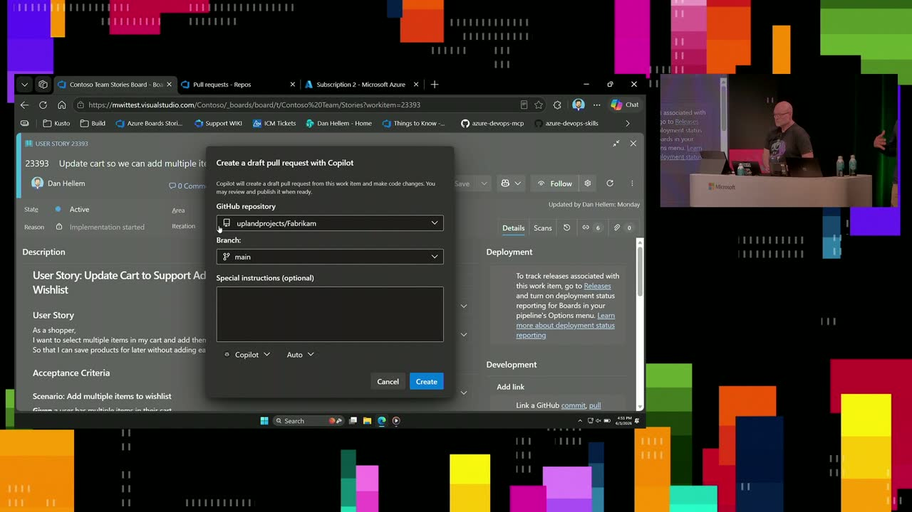
m05s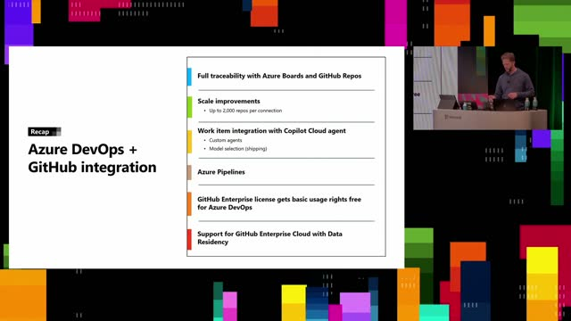
m10s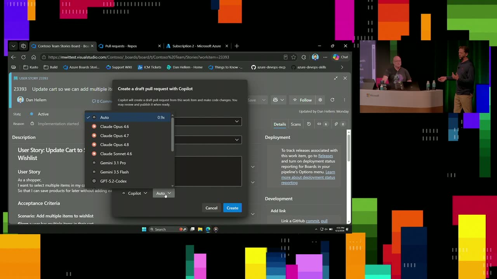
p05s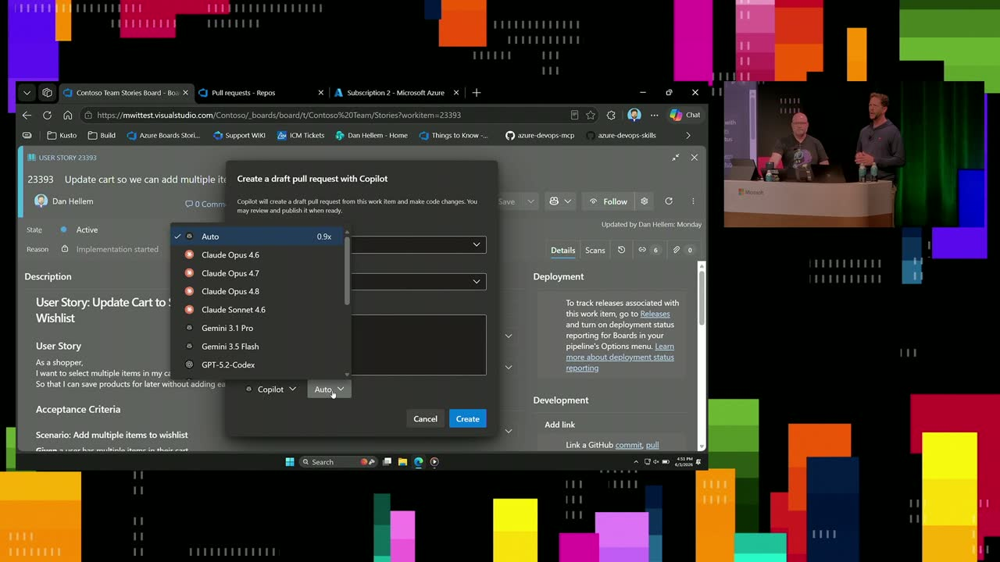
p10s): Rolling out the ability to pick the model used by the work-item-assigned coding agent, with the choice persisted ("sticky") per repository. - Enterprise Live Migrator (ELM) (~00:22:18m05s
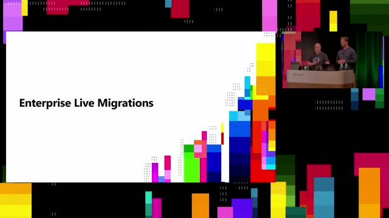
m10s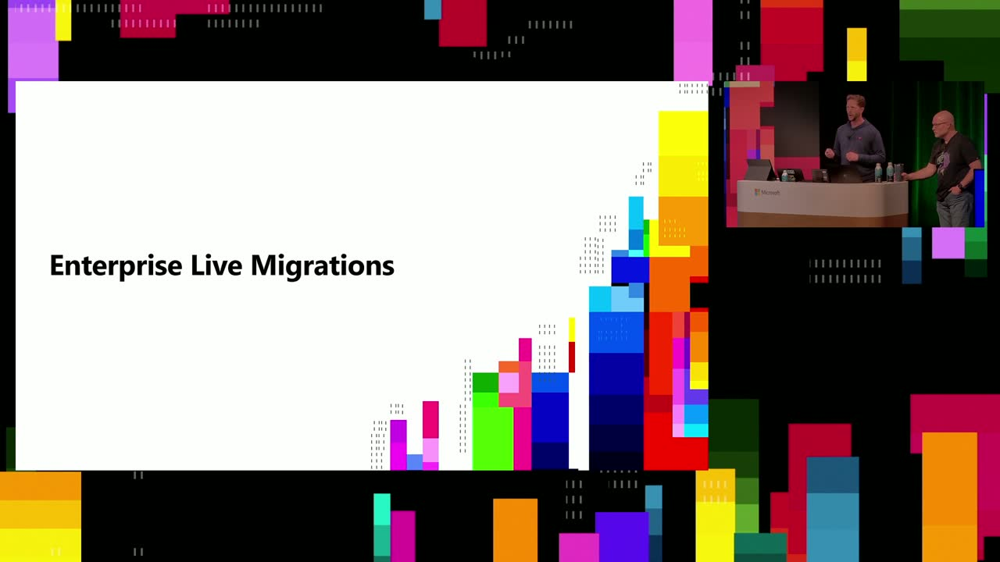
p05s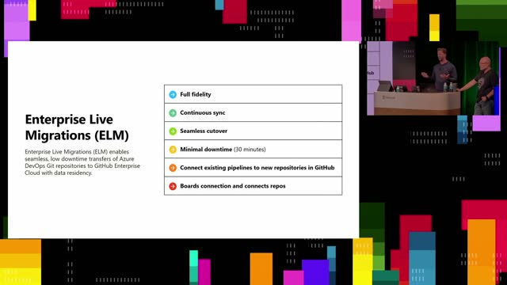
p10s): A public-preview, full-fidelity migration tool that moves Azure Repos to GitHub—including history, pull requests, and commits—with roughly 30 minutes of downtime and automatic reconnection of pipelines and boards. - Copilot code review for Azure Repos (~00:28:17
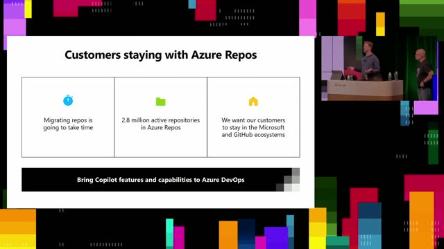
m05s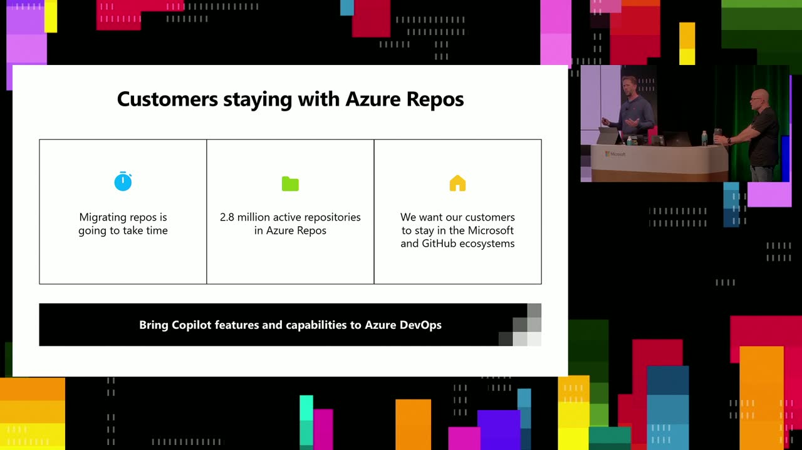
m10s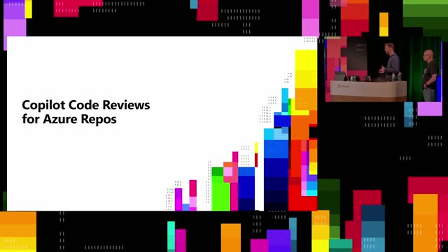
p05s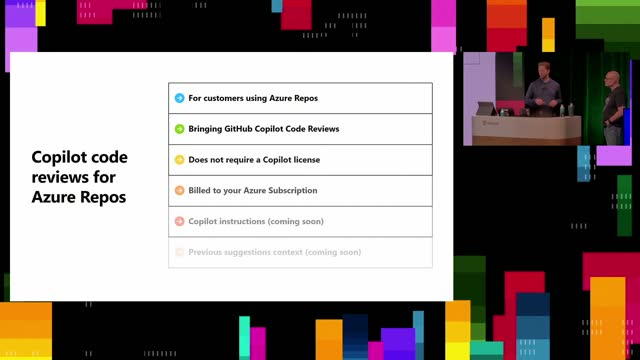
p10s): Brings GitHub Copilot code reviews to Azure Git repos without requiring a Copilot license or GitHub account, billed to the user's Azure subscription via a dynamic background pipeline. - Copilot Auto-fix for GitHub Advanced Security (Azure DevOps) (~00:34:34
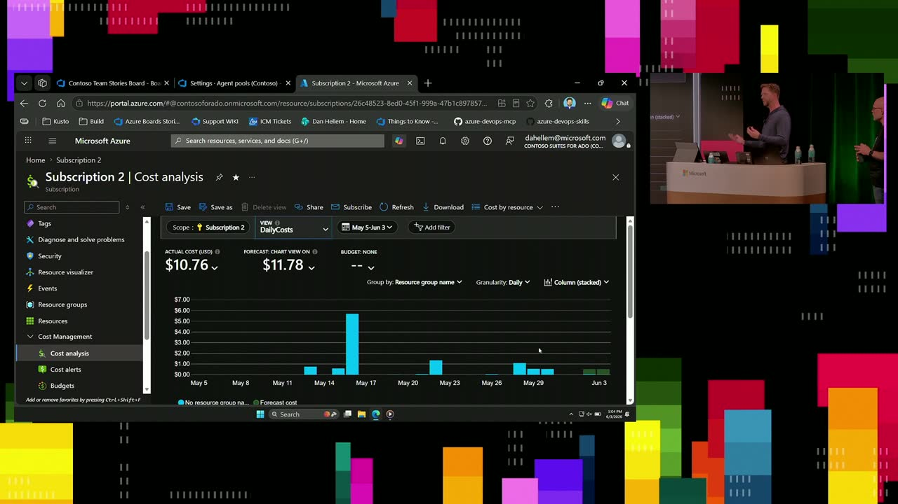
m05s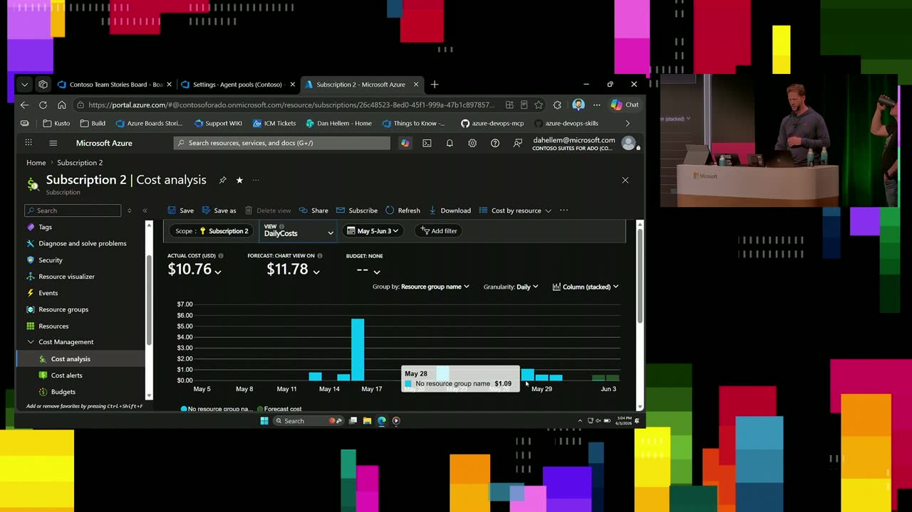
m10s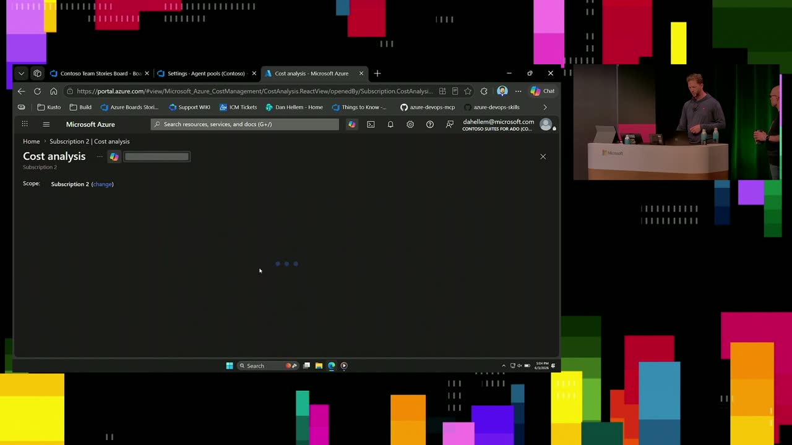
p05s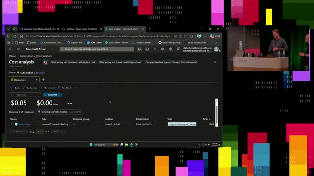
p10s): Generates fixes for CodeQL alerts and opens a pull request automatically, with plans to expand to all alert types, third-party tools, and security campaigns. - Scale improvements (~00:19:55
 m05s
m05s m10s
m10s p05s
p05s p10s): Repos connectable per project per connection increased from 500 to 2,000, addressing customers wanting to connect tens of thousands of repos.
p10s): Repos connectable per project per connection increased from 500 to 2,000, addressing customers wanting to connect tens of thousands of repos. - Apple Mac / pay-per-minute hosted agents (~00:43:46
 m05s
m05s m10s
m10s p05s
p05s p10s): Microsoft-hosted agents in Azure Pipelines with pay-per-minute billing are available for preview sign-up.
p10s): Microsoft-hosted agents in Azure Pipelines with pay-per-minute billing are available for preview sign-up.
Topics covered
- Hybrid patterns connecting GitHub repos with Azure Boards and Azure Pipelines
- Using the GitHub Copilot app as a low-barrier entry point for project managers living in Azure Boards
- Converting Azure DevOps wiki pages into Copilot custom agents and custom instructions
- Refining backlog work items with a custom "backlog manager" agent
- Linking GitHub Advanced Security campaigns and alerts to Azure Boards features and user stories
- Copilot CLI sharing the same MCP configuration as the Copilot app
- Work-item-to-commit/PR/branch traceability and licensing (GitHub Enterprise license includes a basic Azure DevOps license)
- Migration mechanics: validation, synchronization, and read-only cutover
- Billing visibility through Azure cost management for AI features
- Microsoft internal dogfooding of the migration path
Notable quotes
"We had a customer from last week who have 80,000 repos they want to connect to a project. That's 1.5 repo per every person in the company." — Dan Hellem
"You don't even have to have a GitHub account whatsoever. It just magically kind of works on the back end... and as you use it, you get billed to your Azure subscription." — Dan Hellem
"We want to fully harness GitHub Copilot's agentic power while continuing to leverage the investments you've made in Azure Boards, Azure Pipelines, test plans and more." — Dave Burnison
Products and tools mentioned
- Azure DevOps (Azure Boards, Azure Repos, Azure Pipelines, Azure Test Plans, Azure Wiki)
- GitHub
- GitHub Copilot (app, cloud agent, CLI)
- GitHub Advanced Security (Copilot Autofix, security campaigns)
- CodeQL
- GitHub Copilot code review
- Azure DevOps MCP server (local and remote)
- Enterprise Live Migrator (ELM)
- GitHub Enterprise Importer
- GitHub Enterprise Cloud with data residency
- Microsoft Foundry
- Copilot Studio
- Visual Studio Code
- GitHub Codespaces
- Microsoft-hosted agents (Apple Mac, pay-per-minute)
Speakers featured
- Dave Burnison — Senior DevOps Advocate at GitHub, formerly an advocate on the Azure DevOps team at Microsoft
- Dan Hellem — Program/Project Manager on Azure DevOps (Azure Repos, Boards, Wiki, and AI features)
- Lan Kaim — listed speaker (no spoken contribution in transcript)
Follow-up resources
- Microsoft blog post (published the day before the session) covering the overall strategy plus sign-up for ELM, Copilot code reviews, and GitHub Advanced Security auto-fix
- GitHub blog post (published the day before) on Copilot apps and sandboxes
- Session demo repository containing all demo videos, slides, the blog post links, and a direct link to Enterprise Live Migrations
- Technical preview sign-up link for the three preview features (shown on slide)
Frames
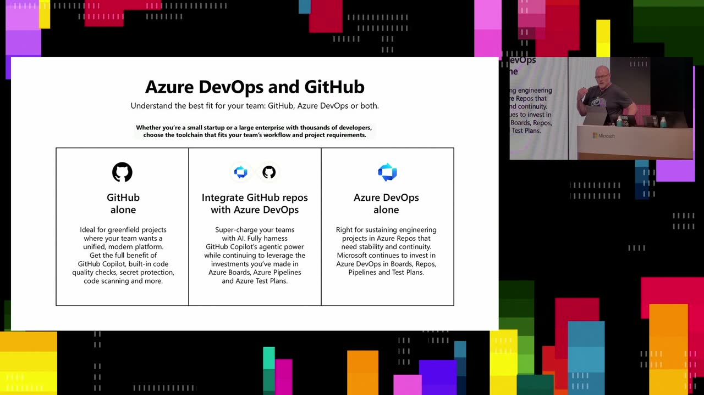
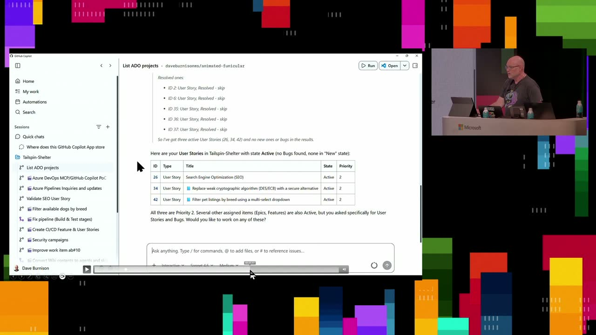
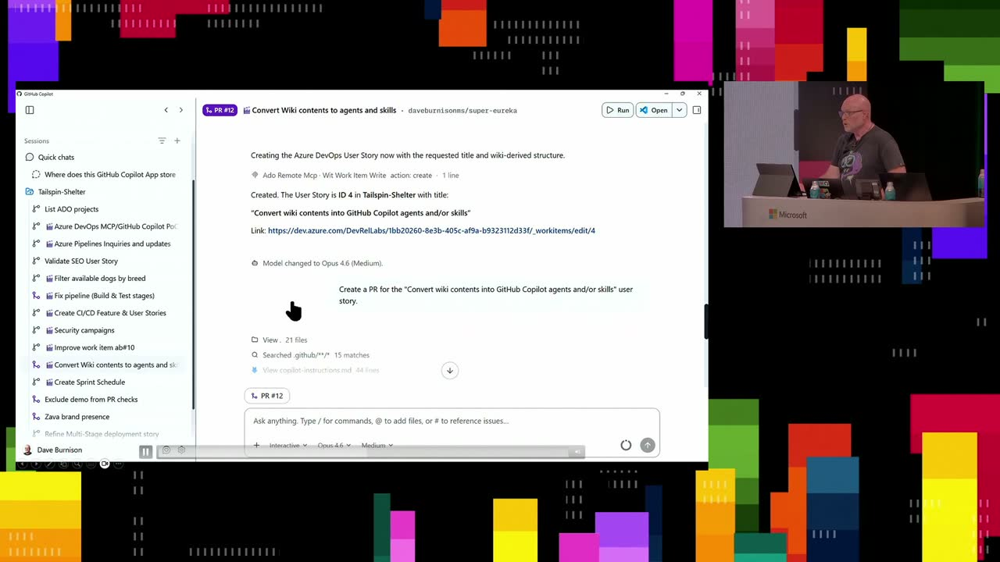
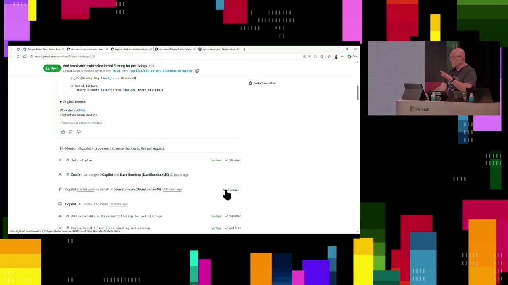
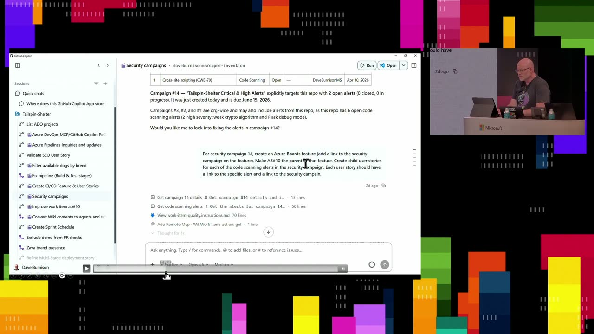
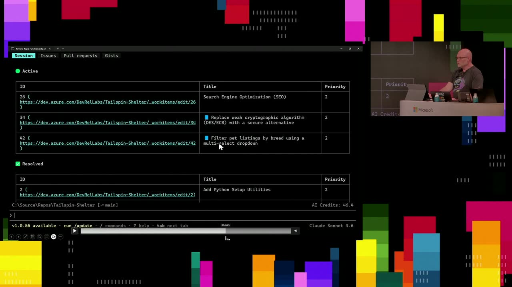
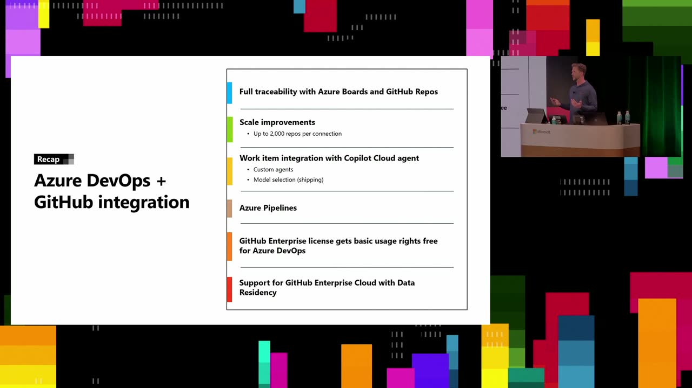
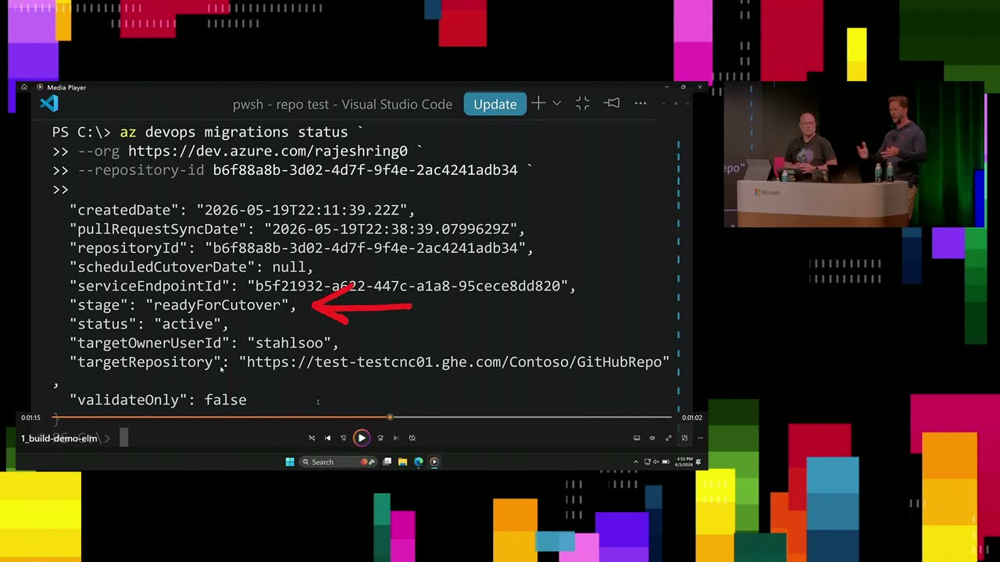
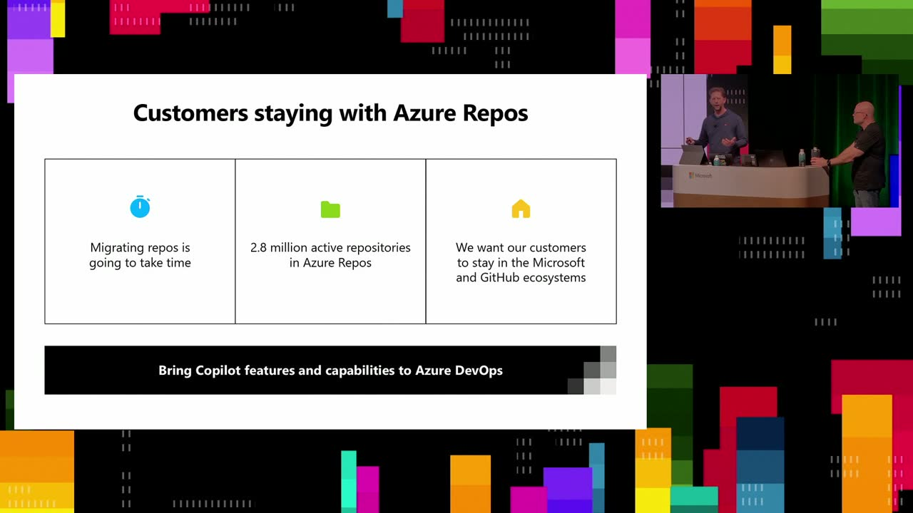
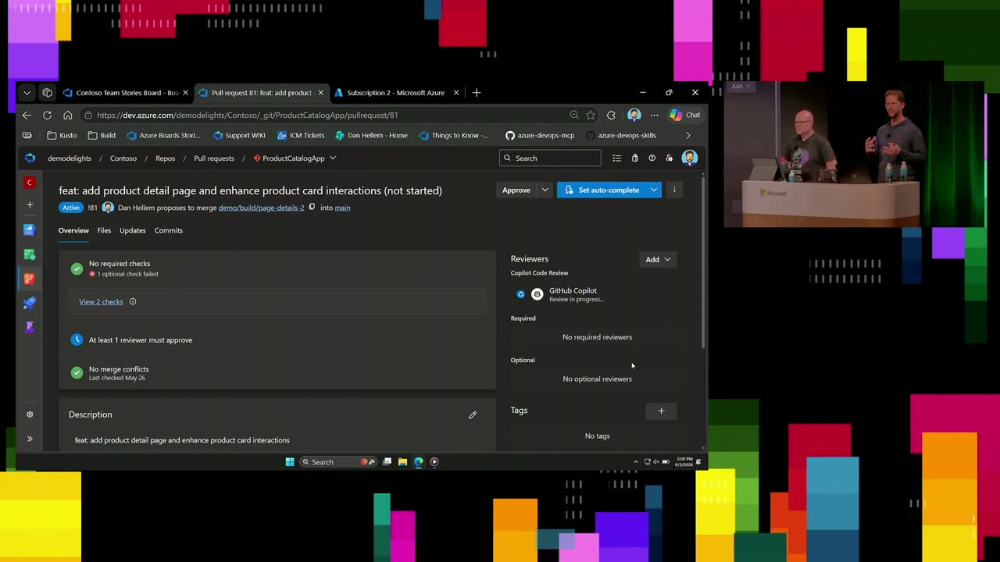
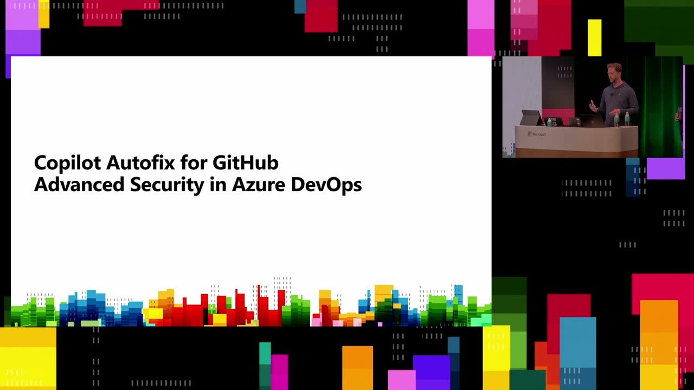
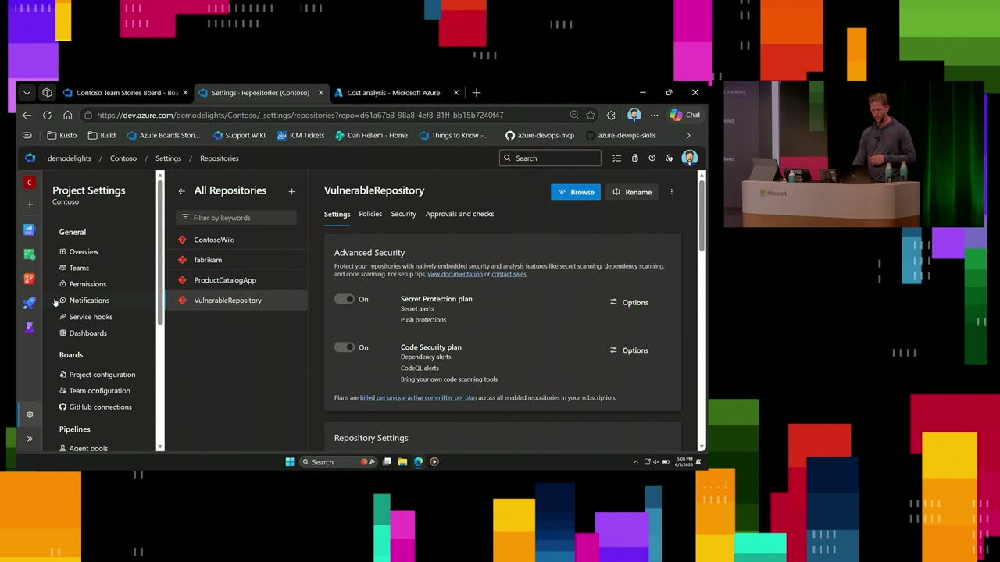
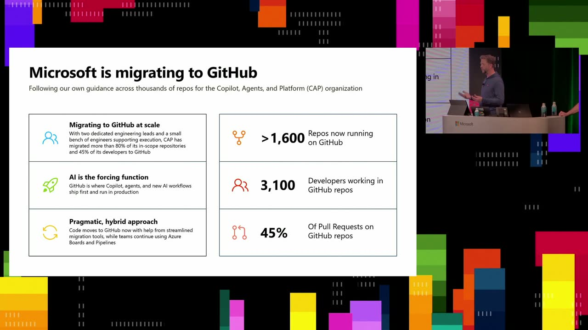
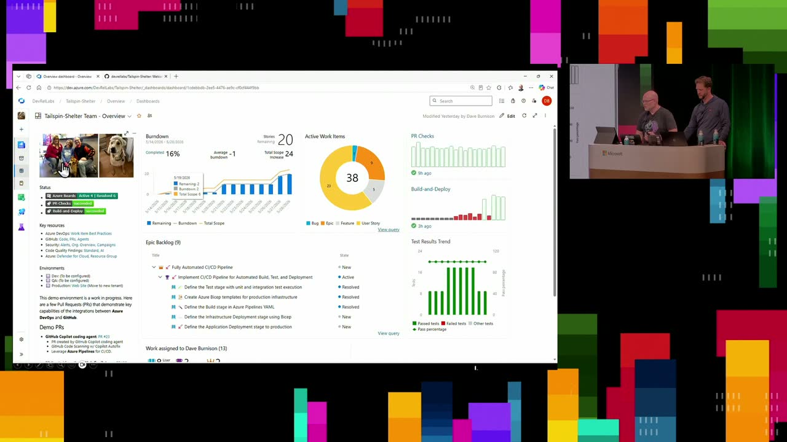
Frames around each announcement
00:17:48
00:19:55
00:43:46
12:29:06


{kind=link}
{kind=link}
{kind=link}
{kind=link}
{kind=link}
{kind=link}
{kind=link}
{kind=link}
{kind=link}
{kind=link}
{kind=link}
{kind=link}
{kind=link}
{kind=link}
{kind=link}
{kind=link}
{kind=link}
{kind=link}
{kind=link}
{kind=link}
{kind=link}
{kind=link}
{kind=link}
{kind=link}
{kind=link}
{kind=link}
{kind=link}
{kind=link}
{kind=link}
{kind=link}
{kind=link}
{kind=link}
Transcript
Show / hide transcript (60,169 chars)
[00:00:02] Good afternoon, everybody. [00:00:06] Let's try that again. [00:00:07] I know it's after lunch, but you've had your caffeine, [00:00:10] haven't you? [00:00:10] Good afternoon, everybody. [00:00:13] All right, there you go. [00:00:14] My name is Dave Burnison. [00:00:16] I'm a senior DevOps advocate at GitHub. [00:00:20] But before coming over to GitHub, I was at Microsoft [00:00:23] for a number of years, and I'd become an advocate [00:00:26] for the Azure DevOps team. [00:00:30] Dan Hellem, I am a project manager on Azure DevOps, [00:00:33] so responsible for Azure Repos, boards, wiki, some of our [00:00:37] AI stuff, etcetera. [00:00:39] All right, well, let's get right into it. [00:00:40] We only have 45 minutes today we want to talk [00:00:45] about Azure DevOps and GitHub, your path to agentic AI. [00:00:51] So for a long time Azure DevOps GitHub seen as [00:00:54] as separate platforms, but over the last few years Dan [00:00:59] and his team especially have been working on more and [00:01:03] better integrations and everything and everything. [00:01:07] So now my integrating GitHub with Azure DevOps is your [00:01:12] path to a Gentek AI. [00:01:14] So I want to show you some of the new [00:01:16] features, but also hopefully inspire you about how to think [00:01:20] about using AI for Azure DevOps through GitHub. [00:01:24] So we want to take a look and, and, and [00:01:27] talk about where we're at today, kind of our messaging [00:01:31] for Azure DevOps. [00:01:33] And whether you're a small startup team or an enterprise [00:01:37] team with thousands of developers, we want to enable you [00:01:41] to choose the best tool chain that fits your team's [00:01:44] workflow and your project requirements. [00:01:47] If you're a small team with a Greenfield project, GitHub [00:01:51] may have everything that you need, including, you know, issues [00:01:56] and projects for planning and tracking and such. [00:02:00] But if you, if you're one of those teams who [00:02:03] has heavily customized Azure boards, lots of Azure Pipelines templates, [00:02:08] you know, you're rolling things up across team projects to [00:02:12] kind of a portfolio level, then we want to talk [00:02:15] about integrating Azure DevOps with GitHub because that supercharges your [00:02:20] teams with AI. [00:02:22] You want to fully harness get a Copilot's agentic power [00:02:25] while continuing to leverage the investments you've made in Azure [00:02:30] boards, Azure Pipelines test plans and more. [00:02:33] Now users of Azure Boards and Azure Pipelines can now [00:02:37] really harness the agentic power of get a Copilot cloud [00:02:41] agent in their work. [00:02:43] And we know there's teams that this might not be [00:02:46] the right time to make that migration. [00:02:49] You know, maybe they're sustaining engineering projects in Azure repos [00:02:53] that need that stability and continuity. [00:02:56] So we'll talk about how Microsoft is continuing to invest [00:03:00] in Azure DevOps in in areas of boards and repos [00:03:03] and, and pipelines and, and test plans. [00:03:06] Dan's got some things I think you're really going to [00:03:08] like there. [00:03:09] So I am going to switch over to demo mode [00:03:13] and I've got series of videos here. [00:03:17] So we don't have to wait for copilot necessarily. [00:03:21] But I want to start off actually let me get [00:03:25] to here we go just kind of with, with the [00:03:28] basics. [00:03:29] So I've got, you know, my Azure DevOps environment. [00:03:32] I'm, I'm leveraging the boards and, and everything here. [00:03:38] You know, I've, I've got my hierarchy even showing the [00:03:42] backlog right here on the dashboard and you know, you [00:03:45] can see all that good stuff, but I want to [00:03:48] show you the GitHub Copilot app. [00:03:51] This is a really low barrier to entry, especially if [00:03:54] you are a project manager that lives in Azure boards. [00:03:58] Maybe, you know, you're not technical to where you're in [00:04:01] Visual Studio Code every day and things like that. [00:04:04] So let's talk about how you can use the GitHub [00:04:08] Copilot app in in your in your work. [00:04:14] So if I go into the settings and under the [00:04:17] MCP servers, we can see I've got this configured for [00:04:22] the Azure DevOps remote MCP server. [00:04:25] Simply plug in the server name, plug in your, the [00:04:29] URL to your organization, specify what tools you want to [00:04:33] use in in my case, I've got, you know, work [00:04:36] items, Azure pipelines, test plans, wiki, etcetera. [00:04:40] But my repos are in GitHub. [00:04:42] So, you know, I'm, I'm not going to say we [00:04:45] need the, the repo tools here. [00:04:48] So I can come in here, connect this to my [00:04:51] GitHub, whoops, connect this to my GitHub repo, and I'm [00:04:55] going to say, well, what Azure DevOps projects can I [00:04:59] access from here? [00:05:02] And we'll see that. [00:05:03] It's going to say, OK, I'm going to reach out [00:05:05] and use that MCP server. [00:05:07] There it is, the ADO remote MCP server to do [00:05:10] that and show me my list of team projects. [00:05:12] It's all right. [00:05:13] I want to start doing some stuff with the Tailspin [00:05:16] toys. [00:05:16] So are there any user stories or bugs recently assigned [00:05:21] to me where the state is set to new or [00:05:23] the ACT or active in the Tailspin Shelter project? [00:05:27] If so, show me those details. [00:05:30] So there's our user stories and the way I set [00:05:34] up the instructions, it's even giving me a link to [00:05:37] that user story. [00:05:38] So right from here I can go and take a [00:05:41] look at the user story. [00:05:43] Now I look through the details of this user story [00:05:46] and it's like, you know, I'm not sure that's really [00:05:48] following our standards and best practices for how a user [00:05:51] story should be set up. [00:05:53] Well, when we did this session for Ignite last fall, [00:05:57] Dan had set up a wiki with defining what's a [00:06:01] good epic, what's a good feature? [00:06:04] You know what, whoops, what's a good, what's a good [00:06:07] user story? [00:06:08] I wonder if we could take that and turn that [00:06:11] into agents and custom instructions that Copilot could use so [00:06:14] that we could then come back to Copilot and say, [00:06:17] hey, help me refine my user stories and everything. [00:06:22] So we'll see that here in a little bit. [00:06:25] Also, Azure Pipelines, what's the status of our pipelines runs? [00:06:31] So we can take a look and see right from [00:06:34] here. [00:06:35] We've got a couple of different pipeline runs or a [00:06:38] couple of different pipelines PR checks and a build and [00:06:41] deploy pipeline and we can see they're currently succeeding. [00:06:45] So, yeah, you can access many different things from within [00:06:50] Azure DevOps through the MCP server. [00:06:53] So there we go right to the details there and [00:06:56] see we're connected up to our tailspin shelter repo and [00:06:59] see the last commit, even jump into the the last [00:07:02] PR and everything right from there if we wanted to. [00:07:06] All right, I think that's yeah. [00:07:10] And then seeing our unit tests results and everything from [00:07:14] here as well. [00:07:16] Now moving on, I want to talk about converting those [00:07:20] wiki pages into copilot instructions and copilot agents. [00:07:25] So I went back to the copilot app, whoops, get [00:07:32] past my prompt. [00:07:35] Come on. [00:07:37] So there's our wiki pages with all that information. [00:07:46] We even have sample markdown for what it should look [00:07:49] like since we're keeping everything in markdown. [00:07:53] So now if I go over to the Copilot app, [00:07:59] here we go. [00:08:02] Do we have any information in the Azure DevOps that [00:08:05] would make for a good Copilot custom agent or a [00:08:09] good skill? [00:08:12] Let it think and noodle on that a little bit. [00:08:14] And it comes back and says, yeah, we've got these [00:08:16] wiki pages out here. [00:08:17] I'm like, all right, let's start out. [00:08:19] Create a user story on this and set the user [00:08:22] stories title to convert wiki contents into Copilot agents. [00:08:27] And then I said create a pull request for this [00:08:31] user story. [00:08:32] So the agents going to go off and and do [00:08:35] all of that work. [00:08:38] And we see it comes back and it creates A [00:08:40] backlog manager custom agent and a set of work item [00:08:44] quality custom instructions. [00:08:46] And as you probably know, those instructions are just markdown [00:08:51] files. [00:08:52] So here's our backlog manager agent, right? [00:08:54] It pulled all that information from the wiki, created that [00:08:59] custom agent for us, and similarly the custom instructions file [00:09:03] here as well. [00:09:11] All right, skip ahead. [00:09:16] So next we we've got a user story for this [00:09:19] dog adoption website started out very basic, you know, you [00:09:23] can see different dogs to pick from, but we want [00:09:26] to we want to be able to filter it by [00:09:29] breed and we're going to have the Copilot cloud agent [00:09:32] actually do the work for us. [00:09:34] But first, we're going to use the Copilot app to [00:09:38] help us refine that basic, basic user story that's out [00:09:42] there. [00:09:45] So I ask for, you know, any user stories assigned [00:09:49] to me. [00:09:52] Anything new there? [00:09:53] Let's skip ahead here to the good parts. [00:09:56] So there it found the User story 42. [00:10:00] Here's the details and then I said, hey, does this [00:10:03] user story follow our standards? [00:10:06] It came back and said no, there's a lot of [00:10:08] areas where it doesn't have, you know, good acceptance criteria [00:10:11] and everything else. [00:10:12] So I said use that backlog manager agent to help [00:10:16] me refine this work item and then we see skip [00:10:20] ahead and there we can see all the changes that [00:10:24] it made to to refine that backlog work item. [00:10:29] And then next we're going to go into the work [00:10:33] item itself. [00:10:35] And if I look at the history, we can see [00:10:37] exactly all the changes that it made. [00:10:40] So, you know, some pretty significant updates there. [00:10:43] Now I want to say, all right, let's take that [00:10:46] user story and assign it to Copilot to do the [00:10:50] work for us. [00:10:51] And here, whoops, when we, when we go in and [00:10:54] select our agent, you can see there's that backlog agent [00:10:57] right there. [00:10:58] But I've also got agents for Bicep and Azure Pipelines [00:11:03] and and other things. [00:11:05] So when we here we go, here's the work that [00:11:09] the agent did. [00:11:11] So you're probably familiar with this, but one of the [00:11:13] things I want to highlight here, one of the another [00:11:15] benefit of moving code over to GitHub. [00:11:17] If I dive into that session and Scroll down a [00:11:21] ways here, it's going to check the changes with Copilot [00:11:25] code review and code QL, the security scanning tools. [00:11:30] And you can see based on the code review comments, [00:11:33] there's a couple of updates that it's that it's making [00:11:37] there. [00:11:37] So if we Scroll down and there's the evidence of [00:11:40] running the security scans, luckily found no scan there. [00:11:44] But the idea is we want to make sure the [00:11:46] code that the agents are writing for you is as [00:11:49] secure as possible. [00:11:50] And you don't have to have licenses for code QL [00:11:54] to run code to have code QL run on the [00:11:57] code that the agents are generating. [00:12:00] And then we saw the diffs there. [00:12:02] Then, then I went in, pulled this up in a [00:12:04] code space and said, OK, let me test this out. [00:12:07] Let me just run this locally within this code space [00:12:11] and see what that breed filter looks like. [00:12:14] There we go. [00:12:15] So now we can select by, you know, breed American [00:12:18] Staffordshire Terrier and see that that's exactly what and that [00:12:21] that's a good start. [00:12:22] We've got other refinements we want to make, but that's [00:12:25] that's good enough for now. [00:12:27] All right, so now the next thing, and I think [00:12:30] this is really cool. [00:12:31] This is really a great way to connect Azure DevOps [00:12:35] and GitHub together with with security campaigns. [00:12:40] So one of the things with with GitHub Advanced Security [00:12:45] is we can go in and create a campaign. [00:12:49] If I go up to my organization level, we can [00:12:51] see we've got a number of campaigns here. [00:12:54] And I've got 1 specifically for Tailspin Shelter where I [00:12:59] said show me all the critical and high alerts and [00:13:03] let's set a deadline of Monday, June 15th there in [00:13:07] the middle. [00:13:08] Whoops. [00:13:14] There we go and look both of those alerts could [00:13:18] be fixed by Copilot auto fix and we'll see that [00:13:21] here in a little bit. [00:13:23] But I'm going to go back now to the copilot [00:13:26] app and say, are there security campaigns that include this [00:13:30] repo shows me all the security campaigns highlights that one [00:13:35] specific to this repo. [00:13:37] Now make sure that's paused. [00:13:40] All right, so for for security campaign 14, create an [00:13:44] Azure boards feature, create a user story for each of [00:13:47] those alerts and link those campaigns and alerts right into [00:13:52] my work items so that I can I can track [00:13:54] them where I'm tracking all of my other project work, [00:13:58] right? [00:14:00] And having links right back to them. [00:14:04] I think this is a pretty powerful way to connect [00:14:07] Azure boards and GitHub. [00:14:09] So now if we look at the results, there's our [00:14:12] new feature, our 2 user stories. [00:14:14] And then if I go oh, and then also making [00:14:18] sure that the work items are assigned the same way [00:14:22] the alerts are assigned in Azure or in the security [00:14:27] campaigns. [00:14:28] So I think next I go over to Azure boards [00:14:32] itself and yeah, we can see those items now in [00:14:36] our backlog. [00:14:37] And if I dig into that feature there, you can [00:14:41] see the, you can see the link right there to [00:14:45] the security campaign. [00:14:48] And if we keep going through there, there's our there's [00:14:52] our security campaign. [00:14:54] I go into this guy and we can see when [00:14:57] we look at the details, it was assigned to me, [00:15:00] but I could assign it to right to copilot here [00:15:04] if I wanted to Now you can see there was [00:15:07] an auto fix here, right? [00:15:09] And this wasn't just a simple one line change. [00:15:11] There was a few lines that needed to be changed [00:15:14] to fix this. [00:15:15] So able to really deal with some more sophisticated changes [00:15:20] and everything. [00:15:22] What else did I show in this one? [00:15:23] I think that was it for that one. [00:15:25] All right, so the next one Copilot CLI. [00:15:32] So when you configure the GitHub Copilot app locally, that [00:15:37] also that configuration is also valid for the CLI as [00:15:43] well. [00:15:43] So now as a developer, I can go into the [00:15:48] CLI and see, you know, my MCP configuration here and [00:15:54] it's that same ADO remote MCP. [00:15:58] And now I can start querying about, you know, what's [00:16:01] in Azure DevOps and and what's in GitHub. [00:16:05] So as soon as that prompt comes up, come on. [00:16:17] Yeah, what does the code, what does the code in [00:16:20] this repo do? [00:16:21] What's the tech stack? [00:16:22] So query that code and it gives me a really [00:16:25] nice summary here, but it also says, yeah, here's a [00:16:29] summary of the code. [00:16:31] But hey, we're using Azure Pipelines for CICD. [00:16:34] We're using Azure Boards for project management. [00:16:38] And then I can go through and say, yeah, show [00:16:41] me or what are the active or resolved user stories [00:16:43] that are assigned to me? [00:16:47] And there's there's the one there we go filter pet [00:16:51] listings by breed using a multi select drop down. [00:16:56] So now I'm going to say what's the status of [00:16:58] this? [00:17:00] And notice I didn't have to say AB 42 or [00:17:02] whatever. [00:17:03] I just said status of the filter by breed user [00:17:06] story in the related code. [00:17:08] And then it and then it shows me, Hey, here's [00:17:11] your pull request right here. [00:17:13] It's waiting for your you to merge it so that [00:17:16] it can go and get deployed to production and everything. [00:17:21] So even from the command line, we can bring together [00:17:25] Azure DevOps and GitHub. [00:17:29] All right. [00:17:29] And with that, some other things I could show, but [00:17:33] I want to give Dan plenty of time. [00:17:35] You're out of time. [00:17:36] Talk about stuff so. [00:17:38] Good. [00:17:39] Yep. [00:17:39] All right. [00:17:40] All good. [00:17:40] So we've missed a couple things here. [00:17:44] I just want to reiterate. [00:17:45] Oh. [00:17:45] Yeah. [00:17:47] Get this thing going faster. [00:17:48] MCP server. [00:17:48] So as everybody's familiar with MCP server, I assume by [00:17:51] now we have 2 MCP servers now in Azure DevOps. [00:17:54] We have a local, we have a remote. [00:17:56] I'll talk about why we still have two here in [00:17:57] a minute. [00:17:58] Both of them are set up. [00:17:59] They have all the basically the same same tools for [00:18:02] work, work items, repos, wiki, test plans, etcetera, has all [00:18:05] that's the same stuff. [00:18:07] The Platinum experience is really, if you're like you're driving [00:18:09] this out of VS Code and get a copilot. [00:18:11] It works super well. [00:18:13] And then in remote, we've also like consolidated a bunch [00:18:17] of tools. [00:18:17] We've it now support service principles, manage identities, you can [00:18:21] actually go ahead and create an agent and Foundry. [00:18:24] We have we're in part of that catalog. [00:18:25] And then we're working on right now. [00:18:27] When I say working on, it's been several months getting [00:18:30] to work with Copilot Studio. [00:18:32] And so that stuff that we are working on now. [00:18:36] And then we're hoping that something will be coming out [00:18:39] in the next next few weeks. [00:18:41] The reason we have two is we've had to build [00:18:43] our remote MCP server on intra and intra has a [00:18:45] bunch of restrictions on what you can and cannot do [00:18:47] with other clients. [00:18:48] So if you try to pull up Claude and use [00:18:49] our remote MCP server, it's not going to work right [00:18:51] now, right? [00:18:52] If you try to do a cursor or codecs, it [00:18:54] won't work. [00:18:54] And so we're working with intra to try to get [00:18:56] around those. [00:18:57] So that's why we're going to keep local up until [00:18:59] that happens. [00:19:00] So. [00:19:01] So that's our MCP server and I've got to skip [00:19:04] through all of this stuff. [00:19:07] Yep, I've got, I've got slides in there that have [00:19:11] got URLs to go dive in to learn more about [00:19:14] it. [00:19:15] So yeah, when you download the deck after the session, [00:19:17] you can get to all that information, dive in, learn [00:19:20] more. [00:19:20] All right, so we Dave was just kind of showing, [00:19:23] hey, if your repos have been migrated over into Azure [00:19:25] Repos, I'm sorry, GitHub, what what's the, you know, what's [00:19:29] that whole story look like? [00:19:30] And so we spent a lot of investment over the [00:19:32] last couple of years of just making sure that, you [00:19:33] know, when you move your repos over, you're probably going [00:19:35] to be staying in boards, you're probably going to be [00:19:37] staying in pipelines, you're probably going to stay in test [00:19:39] plans. [00:19:39] And we want to make sure that integration is awesome. [00:19:41] So a lot of the stuff we it's, it's not [00:19:43] new, right? [00:19:44] It shouldn't come to any surprise to anybody, but we [00:19:46] spent a bunch of time investing in that space, right? [00:19:48] Making sure that you have full traceability between your work [00:19:50] items and GitHub commits and port requests and branches and [00:19:53] that kind of thing. [00:19:55] We've also spent a lot of time on scale improvements. [00:19:57] So we originally set it up where you could have [00:20:00] about 500 repos connected to a project per connection. [00:20:03] We're now at 2000. [00:20:05] And so we had to do that because more and [00:20:06] more bigger organizations started coming into the into the product, [00:20:09] started moving their repos over into GitHub and started increasing [00:20:11] the demand there. [00:20:13] This is one that's we're going to continue to work [00:20:15] on. [00:20:15] It's probably going to be something that we have to [00:20:16] work on forever. [00:20:17] I'll give you an example. [00:20:19] We had a customer today who wanted to connect 30,000 [00:20:21] repos to a particular project. [00:20:24] If you think that's crazy, we had a customer from [00:20:26] last week who have 80,000 repos they want to connect [00:20:29] to a project that's 1.5 repo per every person in [00:20:31] the company. [00:20:32] So that's a lot of repos that they had sitting [00:20:34] out there that they want to connect. [00:20:35] So this is a, a challenge that we're going to [00:20:37] have to continue to deal with on a regular basis [00:20:39] and we're going to continue to make that improvement over [00:20:41] time. [00:20:42] And of course, if you're using the integration, you can [00:20:44] obviously open your pipeline up and connect it to the [00:20:46] repo that you move. [00:20:47] So you don't have to change your pipelines around. [00:20:49] We we've added the ability or added the licensing or [00:20:52] improved the licensing friction. [00:20:54] So if you purchase a GitHub Enterprise license, you automatically [00:20:57] get a basic license for free. [00:20:59] Well, not for free for part of that purchase. [00:21:01] And then GitHub Enterprise Cloud with data Residency is something [00:21:04] that GitHub came out with about two years ago, is [00:21:06] now I think. [00:21:07] Something like that year and a half. [00:21:08] And so all the things that we talked about like [00:21:10] the integration and the scale improvements, that was all included [00:21:13] as well. [00:21:14] Now Dave showed the work item integration with a the [00:21:18] the Copilot cloud agent. [00:21:19] We did make some improvements to that. [00:21:21] I just want to show those real quick. [00:21:23] So obviously you can create your own agent like Dave [00:21:25] showed, and you can pick your own agent, which you [00:21:28] can kind of see here down the bottom when you [00:21:30] picked that. [00:21:31] We also have the ability now to pick your own [00:21:33] model, right? [00:21:34] So certain models were better in certain repos, depending on [00:21:36] your agent, depends on the instructions, depends on how much [00:21:39] you want to pay. [00:21:40] So now this is actually a feature that we're rolling [00:21:43] out as we speak, which allows you to pick the [00:21:45] model to figure out what works for you. [00:21:46] And of course, this is all sticky. [00:21:48] So once you select it once, it'll work again for [00:21:50] the next time and the next time after that. [00:21:52] All right, I'm going super fast. [00:21:55] I'm just worried about time. [00:21:57] All right, so the next challenge then is if you [00:22:01] are in Azure, if you are in, oh, I got [00:22:03] to switch the slides. [00:22:05] Switch the slides. [00:22:07] Yep, Yep, there you go. [00:22:08] If you move your repos over or if you're about [00:22:09] to move your repos over to GitHub, right? [00:22:11] And you have hundreds, if not thousands of repos in [00:22:14] Azure, in Azure repos. [00:22:16] Your next biggest challenge is migrating those, right? [00:22:18] And so we are actually coming up with a tool [00:22:20] now that is in public preview and we'll show you [00:22:23] how to get signed up here in a minute. [00:22:26] But this basically is what we call enterprise live migrator. [00:22:29] This is a full fidelity moves, all moves, your repo [00:22:32] moves everything about it over, right? [00:22:34] It's bringing all the pull requests, it's bringing all the [00:22:36] commits, it's bringing the entire history over. [00:22:38] It's a, it's basically a seamless cut over. [00:22:40] So what it does is when you go ahead and [00:22:42] do the migration, you know, there's no basically downtime, right? [00:22:46] There's like a 30 minute downtime. [00:22:47] We've had some customers that have some very, very big [00:22:50] repos that they've tried to migrate over. [00:22:52] They've used the GitHub enterprise importer, that's what it's called, [00:22:55] right? [00:22:56] And they've actually had downtime. [00:22:57] They're going to have downtime of four to five days, [00:22:59] right? [00:22:59] And that's obviously not acceptable for most, most customers. [00:23:02] So an enterprise live migrator does that whole seamless migration, [00:23:06] low downtime. [00:23:07] It also connects up your pipelines. [00:23:09] So when you move the repo over, it'll connect your [00:23:10] pipeline up. [00:23:12] It also connects your boards up, right? [00:23:13] So you don't have to do all that stuff as [00:23:15] extra steps. [00:23:17] So I'm going to show I got a quick video [00:23:19] here. [00:23:19] Let's see. [00:23:20] Now I got to switch again. [00:23:20] Yeah, you're forgetting to do that on how this works. [00:23:24] So here I have a repo in Azure DevOps and [00:23:26] I want to go ahead and migrate this thing over. [00:23:29] So I'm going to go in and I want to [00:23:31] migrate it over into a GitHub Enterprise Cloud with data [00:23:34] residency. [00:23:35] And so I'm going to, sorry, let's get rid of [00:23:39] that. [00:23:40] There we go. [00:23:40] There we go. [00:23:41] So the first thing I'm going to go do. [00:23:43] So before I start there, actually right now I'm going [00:23:45] to show you how this works in the CLI. [00:23:47] And the only reason it's in the CLI now is [00:23:49] because we just didn't have time to get the UX [00:23:50] all done. [00:23:51] But I'll show you some screens in the UX. [00:23:53] Those will be part of the the preview as well [00:23:55] once we open that up. [00:23:57] And also the commands that you're seeing here, we also [00:23:59] have included in our MCP server. [00:24:01] So you can have a kind of an agent to [00:24:02] help you with that process as well. [00:24:05] So here I have come on, there we go. [00:24:10] So the first thing I need to go do is [00:24:11] create the migration, right? [00:24:12] So I'm calling the CLI, create the migration. [00:24:14] I'm going to, you know, here's the organization, here's a [00:24:16] repository, here's where I needed to go go. [00:24:18] I'm putting in some information about myself, the user ID, [00:24:21] the agent pool, etcetera. [00:24:22] And the first thing it does is it queues it [00:24:24] up, right? [00:24:24] That's what we need to go do. [00:24:25] So it's kind of queues it up. [00:24:27] And then as soon as it gets in the queue, [00:24:28] I'm going to use a status, right? [00:24:30] So I'm going to check the status on a regular [00:24:31] basis, right? [00:24:32] Because it kind of just takes a little bit of [00:24:33] time. [00:24:34] So the first thing it does is goes out and [00:24:35] does a bunch of validation. [00:24:37] Validation is just really checking for certain file size, push [00:24:40] packs, that type of thing, just to make sure it's [00:24:42] legit and you can go ahead and migrate it over. [00:24:44] And if it doesn't, it'll let you know what the [00:24:46] what the problems are. [00:24:48] Once we go through validation, which is usually rather quick, [00:24:50] we'll, you know, we'll do another status and we will [00:24:53] go ahead and we do what's synchronization. [00:24:54] Synchronization. [00:24:55] Synchronization is a process of copying everything over, right? [00:24:58] It's going to copy all the files over. [00:25:00] It's going to copy the whole repo over the entire [00:25:02] history, all that kind of thing. [00:25:03] This could take hours, this could take days, but that's [00:25:06] fine because ADO you can still like do work on [00:25:09] the repo and ADO as you're doing the synchronization. [00:25:12] And so as I do the synchronization, I can continue [00:25:14] to work with it and eventually the synchronization is kind [00:25:17] of complete and it's kind of like all caught up, [00:25:19] right? [00:25:19] And we'll continue to synchronize it on a regular basis. [00:25:22] I think it's every few hours to make sure it's [00:25:24] always up to date. [00:25:26] And at some point you get ready for cut over, [00:25:28] right? [00:25:28] So you've migrated it all over, It's all synchronized up. [00:25:31] And now I want to go say, Yep, OK, I'm [00:25:32] ready to cut this thing over. [00:25:34] So I'll go ahead Basically set my cutover. [00:25:36] I'm basically saying here's the org and here's the repository. [00:25:38] And here's the date that I want to cut this [00:25:40] over kind of scheduling it. [00:25:41] It'll go ahead and schedule it. [00:25:42] It'll kick in. [00:25:44] You can now see the status where it's going through [00:25:46] the cutover process at this point is where the repo [00:25:49] is basically set to read only mode, right? [00:25:51] I'm in read only mode. [00:25:53] You can no longer basically work on the repo inside [00:25:55] of Azure DevOps. [00:25:56] The cutover is against roughly like 20 to 30 minutes [00:25:58] and then it'll complete the complete the migration. [00:26:02] And then as it's in cutover mode again, I'm just [00:26:04] going to check the status again. [00:26:06] And eventually once that cutover mode is completed, it marks [00:26:09] it as migrated. [00:26:10] And here I'll just kind of show quickly that I'll [00:26:12] go into now, as you're inside GitHub, you can see [00:26:14] the repo came over. [00:26:15] You can see that it has all the pull requests [00:26:17] in there, It'll have all the branches in there, It [00:26:20] has the entire history, etcetera, etcetera. [00:26:22] OK, So then again, I'll talk a little bit here [00:26:24] in a second about how to get access to this, [00:26:27] but that's Enterprise Live migrations. [00:26:30] Feel free to clap if you need to. [00:26:32] That's good. [00:26:36] Oh, I'm getting all my stuff confused here. [00:26:43] I'm talking so fast. [00:26:45] OK, so now it's Enterprise Live migrations. [00:26:49] This isn't working here, Dave. [00:26:50] Oh, that's. [00:26:50] Because there you. [00:26:55] Go nice, be good. [00:26:56] So here's some of the UX as well. [00:26:57] I forgot to mention that. [00:26:58] So pretty straightforward, right? [00:27:01] There's an extra page you can kind of see over [00:27:02] on the left side there for migrating to GitHub. [00:27:05] You can see a, you know, kind of the status [00:27:06] of your different repos that you have, what's going on [00:27:09] with them, what's been migrated, what's the synchronization phase, what's [00:27:11] in cutover phase, etcetera, etcetera. [00:27:13] If there's any errors in there, I'll let you know. [00:27:16] And then just like I did in the CLI, I [00:27:17] could basically queue up some repos that I want to [00:27:19] migrate over, put in the information that I want to [00:27:21] put in there, and go ahead and start the migration. [00:27:23] So it's a nice UX all around that as well. [00:27:28] All right, so for those customers that aren't moving the [00:27:30] repos over or or haven't moved the repos over yet [00:27:32] or going to stay in Azure DevOps, there's obviously a [00:27:34] variety of reasons why people stay in Azure DevOps, right? [00:27:37] It's, you know, if we take a look at the [00:27:39] data, we have about 2.8 million repos that are active [00:27:41] inside of Azure DevOps. [00:27:43] Not all these folks are going to be able to [00:27:44] move in the short term, you know, and it's going [00:27:46] to take people time. [00:27:47] It's going to take people time to whether it's, you [00:27:50] know, compliance reasons, whether it's just tooling reasons, etcetera. [00:27:53] It's going to take people time to basically move those [00:27:56] things over. [00:27:57] And our job is to basically what we want to [00:27:58] do is we want to make sure that people that [00:28:00] are staying in Azure repos are happy, right? [00:28:02] And so the idea is, is to bring some of [00:28:03] these copilot features into Azure DevOps to kind of keep [00:28:06] people where they're at. [00:28:07] The last thing we want you to go do is [00:28:08] start looking at other tools and that kind of thing [00:28:10] to get out of the Microsoft and get a ecosystem. [00:28:12] So therefore we want to we want to bring some [00:28:14] of these things to you. [00:28:17] So now another nice announcement here is we kind of [00:28:19] announced this yesterday in the blog post, but we're going [00:28:22] to bring copilot code reviews for Azure repos. [00:28:24] And what this is is it brings you the power [00:28:27] of GitHub copilot code reviews. [00:28:29] We don't need to have a copilot license. [00:28:31] You don't even have to have a GitHub account right [00:28:34] whatsoever, right. [00:28:35] It just magically kind of works on the back end [00:28:37] and it what it does is it is and obviously [00:28:39] your code needs to be in Azure repos for this. [00:28:43] And as you use it, you get billed to your [00:28:45] Azure subscription. [00:28:47] OK. [00:28:48] And so I'll go through a demo here real quick [00:28:50] and how this works, and then I'll talk about those [00:28:52] last two items on the bottom. [00:28:53] When when you say Azure repos, you're talking about Azure [00:28:56] get repos. [00:28:56] Right that's right. [00:28:57] It does not work with TFVC. [00:28:59] So no plans to make it work with TFVC. [00:29:04] Am I on the right one? [00:29:04] Yep Yep. [00:29:05] All right, all right, so here I have a couple [00:29:08] pull requests that I I want to go I'm going [00:29:10] to play with. [00:29:11] I'm going to some of these things are kind of [00:29:13] in the middle of what I'm doing here because it [00:29:15] does take a little bit of time for the copilot [00:29:16] to go run and report back. [00:29:18] But here you can see I have a let's see, [00:29:20] not started. [00:29:20] That's the one I want. [00:29:22] So here I have a pull request. [00:29:24] Looks like a normal pull request. [00:29:26] What I'm going to go do now is I'm going [00:29:27] to turn on the feature and you can kind of [00:29:28] see the differences. [00:29:29] So I'm going to go into I manage repos and [00:29:34] I'm going to come into this guy here and go [00:29:38] down to settings. [00:29:41] And down here on settings, you should be able to [00:29:43] see enable copilot code review for pull requests on this [00:29:45] repo. [00:29:46] Right now we have basically 2 levels of control. [00:29:48] We're likely going to put in the third one. [00:29:50] First one is at the at the organization level, which [00:29:53] basically says people inside my organization can use copilot code [00:29:57] reviews. [00:29:58] And then we have to flip it on at the [00:29:59] repo level. [00:29:59] Well, what the concern here is, is, you know, if [00:30:01] you're a big organization and you have lots and lots [00:30:03] of repos, the last thing you want to do is [00:30:05] turn it on all of them people start running code [00:30:06] reviews and you get a monster bill at the end [00:30:08] of the month type thing. [00:30:09] And so we're allowing you to kind of control this, [00:30:11] especially during the preview phase. [00:30:12] So here I'm going to go flip it on and [00:30:15] then I'm going to go back to my pull requests. [00:30:19] And here I'm going to open up that pull requests. [00:30:21] And you should see here now that I have a [00:30:23] GitHub Copilot code review that I can request. [00:30:26] So, you know, it's not a very complicated port request [00:30:29] is just some, you know, some very simple changes, mostly [00:30:32] TypeScript type stuff. [00:30:33] I'm just adding, adding some things to it here. [00:30:37] I'm going to go into my overview and I'll go [00:30:38] ahead and hit request. [00:30:40] So the way the code, the code reviews work is [00:30:42] it essentially spins up a dynamic pipeline in the background. [00:30:46] That dynamic pipeline in the background does a shallow clone. [00:30:48] Once it does a shallow clone, it gets also the [00:30:51] diffs and sends that basically in a nice little type [00:30:53] package to copilot. [00:30:54] copilot then reviews all that stuff comes back with a [00:30:57] bunch of suggestions and we append those suggestions to to [00:31:00] the PR. [00:31:01] So rather than watching that work, I'm going to go [00:31:04] show real quick one that's already been done. [00:31:07] This one here. [00:31:09] So here, if I open it up, I can see [00:31:10] that I have multiple changes or multiple suggestions. [00:31:13] So here I have a critical bug. [00:31:15] It's giving me basically a suggestion changes here, just just [00:31:19] basically everything you would expect for a coding agent to [00:31:23] to do for a code review here. [00:31:25] I have again another bug with multiple suggestions and within [00:31:28] the interface, I can come in here and apply changes, [00:31:31] apply changes, etcetera. [00:31:33] So I can go ahead and make these changes, apply [00:31:35] them, commit them, do a do a full commit and [00:31:38] then I can come back in here and re request, [00:31:40] right? [00:31:41] And I can kind of go through that loop process. [00:31:43] So this brings the power of those Copilot code review [00:31:47] into into Azure Repos, gives you the full flexibility of [00:31:51] doing the code reviews. [00:31:54] There's some things that we haven't finished yet that I [00:31:56] just want to talk about real quick is Copilot instructions. [00:31:59] So this is kind of like a generic copilot, right? [00:32:01] Like it's nothing. [00:32:02] It doesn't, it doesn't adhere to Copilot instructions. [00:32:05] So if you have a bunch of instructions that are [00:32:06] sitting in your repo, we don't really care about them [00:32:08] at the moment. [00:32:08] This is going to change. [00:32:09] This is one of the things that we're going to [00:32:11] do before it goes GA. [00:32:12] The other thing on the bottom there is it doesn't [00:32:14] necessarily take into account very well a previous suggestions. [00:32:17] So I've ran into interesting loops where I made a [00:32:19] suggestion, I fixed it and comes back and re suggests [00:32:22] something different on the same line of code. [00:32:24] And so adding suggestions as context from previous basically code [00:32:28] review runs will be added to help make it better [00:32:30] decisions for you. [00:32:32] OK, so I'm actually curious, is this interesting to people [00:32:34] with bringing this into the product? [00:32:36] OK, all right. [00:32:37] Good. [00:32:37] Awesome. [00:32:38] Good, good. [00:32:39] Awesome. [00:32:40] One thing I just would like to show real quick, [00:32:43] so this like I said, keep forgetting to switch, sorry, [00:32:46] is we do have agent pools is where basically we're [00:32:49] tracking this at. [00:32:50] So when you are signed up for the preview, and [00:32:52] again, I'll show that in a second on how to [00:32:54] get signed up and you want to take a look [00:32:56] at like what's happening and what's running or something fails. [00:32:59] You can come into agent pools, Azure Pipelines and you [00:33:02] can see those runs that are happening. [00:33:04] So you can see that there's one happening right now [00:33:06] that's a different one. [00:33:09] See if I can find one real quick from yesterday. [00:33:11] These are all the code review. [00:33:14] There we go. [00:33:16] We are planning on improving this kind of interface a [00:33:18] little bit to make it a little bit easier to [00:33:19] kind of find these and see these. [00:33:21] Obviously, it doesn't look pretty, it's just a bunch of [00:33:23] Jason, but you can kind of see the whole event [00:33:25] in the run that it takes to go do that. [00:33:27] OK, All right. [00:33:29] So let's go to and next thing we want to [00:33:33] do. [00:33:34] The other thing that we're bringing to kind of AI [00:33:37] is copilot auto fix for GitHub Advanced Security. [00:33:40] So if you're a gas deal user, we're bringing the [00:33:43] ability to just auto fix issues that pop up. [00:33:46] So I'll show that one here real quick as well. [00:33:48] So I'm going to go back. [00:33:50] Oh, sorry, I forgot to talk about billing. [00:33:53] That's more important actually. [00:33:54] Just talk about that real quick. [00:33:56] Anybody care about billing? [00:33:58] So this bill to your Azure subscription, OK, so that's [00:34:01] how this works. [00:34:02] And so if I come into my subscription, come down [00:34:05] to cost management, do cost analysis, I can come in [00:34:08] here now and see this at the daily rate basically [00:34:12] of how much it cost me per day to run [00:34:14] this thing. [00:34:15] And you can actually break it. [00:34:16] So here you can see, you know, I had a [00:34:18] lot of runs running back in the 14th, but you [00:34:20] can kind of break it down per run. [00:34:22] And some of these runs are, you know, super cheap. [00:34:23] It's literally a couple cents per day per run. [00:34:27] Sometimes it's a little bit more obviously just depends on [00:34:29] the complexity of your pull request and the size of [00:34:31] the pull request and what kind of reasoning has to [00:34:34] happen there. [00:34:35] Another thing you can do here too is I can [00:34:37] come down and look at my resources. [00:34:40] If I look at resources, I can see how how [00:34:44] it basically broken down per organization. [00:34:47] So this is my organization here. [00:34:49] You can see that I have basically the meter which [00:34:52] is my AI credit for ASDO. [00:34:54] Here's the product. [00:34:55] And then basically here how much it cost has cost [00:34:57] me point $0.05 this month, which is not a whole [00:34:59] lot. [00:34:59] Let's do last 30 days, give you a better idea [00:35:02] of how much it costs, you know, over a period [00:35:05] of time. [00:35:06] So again, we're suggesting that when you start this out, [00:35:08] building will be part of the preview. [00:35:10] So you don't get these for free. [00:35:12] You can start using them. [00:35:13] The suggestion is it just starts slow, right? [00:35:14] Start with a few repos, see how much cost you're [00:35:16] acquiring, see how it works for you, that type of [00:35:18] thing. [00:35:19] Make sure it gives you the value that you need [00:35:21] and help you better understand the the pricing, the pricing [00:35:24] limits. [00:35:26] We'll save the questions for the end. [00:35:28] Yeah. [00:35:29] All right, so that's that one. [00:35:32] Now we'll talk about the Gazdo stuff. [00:35:34] I don't know why I did that to switch back, [00:35:37] let's go down to advanced security. [00:35:39] So in advanced security, let's grab the right one. [00:35:45] So here I have code QL scans basically running on [00:35:49] this particular repo. [00:35:50] It's fine. [00:35:50] You can see it's found a bunch of issues already [00:35:52] for me here. [00:35:53] If I open up, what are the issues that I [00:35:54] found typically, what how would you fix this, right? [00:35:56] It basically right now comes up and says, hey, we [00:35:59] got a problem. [00:36:00] Here's what the severity is. [00:36:01] Here's what we think we found. [00:36:02] You got some SQL injection issues here. [00:36:04] Here's a description of it recommendation. [00:36:06] I'd have to open this up in VS Code, go [00:36:08] make my code change, do a port request, that type [00:36:10] of thing. [00:36:12] So now what we're going to do is we're going [00:36:13] to go flip this one on as well. [00:36:15] So we're going to go down to manage repositories and [00:36:19] we'll go into our vulnerable repo in our code scanning [00:36:23] our code security plan. [00:36:25] And you can see here there's another option called auto [00:36:27] fix. [00:36:28] OK, auto fix. [00:36:29] We'll just go ahead and enable that and we'll come [00:36:34] back to advanced security. [00:36:39] And now you can see I have a generate fix [00:36:41] up on the top, right, right. [00:36:43] So this is very much like Copilot code reviews. [00:36:46] It'll run, spins up a dynamic pipeline in the background, [00:36:49] goes ahead and takes the things that you want me [00:36:51] to go change, goes ahead and changes them, creates APR, [00:36:54] etcetera. [00:36:54] So here I'm going to go do a fix in [00:36:56] progress. [00:36:56] These ones take a little bit longer. [00:36:58] It takes like 3 to 4 or 5 minutes sometimes [00:37:00] to complete the complete the fix. [00:37:02] So I'm going to show another one that I used [00:37:05] to have or did already. [00:37:06] So here basically I've gone in, made the code, made [00:37:09] the code change. [00:37:10] You can see the related pull request. [00:37:12] I can open up the pull request, take a look [00:37:14] at that, see what it is, etcetera. [00:37:15] So that's that's copilot code reviews. [00:37:19] Let me talk about a couple of things with that [00:37:21] real quick. [00:37:23] So obviously he's bringing the power of get up copilot [00:37:26] Autofix to Gazio customers. [00:37:27] We're starting with just code QL alerts right now. [00:37:30] If the idea is eventually to be expand all scoop [00:37:32] any alerts, especially you can even bring your own thirty [00:37:35] party tools and the idea is just to make it [00:37:37] faster for you to go ahead and do this right, [00:37:39] faster to fix issues that pop up. [00:37:41] We're also going to be adding auto fix to security [00:37:43] campaigns. [00:37:44] So security campaigns is something that is part of Gasdo. [00:37:47] We released that just a couple of sprints ago. [00:37:49] We'll bring that ability to do auto fix to security [00:37:52] campaigns as well. [00:37:53] OK, we got 7 minutes left. [00:38:00] All right, so here's the technical preview. [00:38:01] So we have three of these. [00:38:05] We did a blog post earlier today, I'm sorry, yesterday. [00:38:08] We'll have another blog post that'll come out on these [00:38:10] individual ones. [00:38:10] So you can certainly sign up. [00:38:11] You can see the sign up link on the bottom. [00:38:13] The idea is we're just taking your organization name, take [00:38:16] your infant little bit of your e-mail and we'll help [00:38:19] go ahead and get you signed up. [00:38:21] We'll send you an e-mail when we're ready. [00:38:23] We're expanding or rolling this out over a period of [00:38:25] time, right? [00:38:26] So we'll have a wave of people, we'll turn it [00:38:28] on, we'll kind of see how it goes. [00:38:29] We'll add another wave of people, etcetera, etcetera, but you'll [00:38:32] certainly get an e-mail from one of us on the [00:38:34] product team once you sign up. [00:38:35] We'll let you know when it's ready type thing to [00:38:37] take a look at. [00:38:42] Let's see, what else do we have? [00:38:43] Oh, so another one we just kind of like to [00:38:46] mention before we kind of wrap things up is Microsoft [00:38:50] is kind of practicing what we preach, so to speak. [00:38:54] So we have a bunch of internal teams right now [00:38:56] migrating their repos over to GitHub and we have a [00:38:59] bunch of folks actually actively working inside of GitHub. [00:39:02] So the migration path is, was the big thing that [00:39:05] spurred Elm, right? [00:39:07] Being able to make it easier for people to migrate [00:39:09] their repos over into, into GitHub. [00:39:11] So this is kind of, you know, AI is a [00:39:13] forcing function for us internally, just like it is probably [00:39:15] for all of you. [00:39:16] It's like getting more AI and doing more. [00:39:18] So we have a bunch of, again, we're, we're, there's [00:39:21] some repos that we can do inside of Azure, inside [00:39:23] of Microsoft that can be easily moved. [00:39:25] And we, there's some that are not so much. [00:39:27] And so we're kind of in the same boat as [00:39:28] everybody else's. [00:39:29] Some of these folks are going to move over. [00:39:30] So we're not going to and they're going to stay [00:39:31] in Azure repos. [00:39:32] But this gives you an idea of like we're also [00:39:34] dogfooding it as well. [00:39:35] We're seeing how it works. [00:39:36] We're adding tools to make it easier for us internally [00:39:38] as well for folks externally. [00:39:40] And this, this is not all of Microsoft right? [00:39:42] This is 1 slice just that copilot agents and platform. [00:39:45] Yeah, this is a very small, small part of the [00:39:47] organization at the moment. [00:39:48] So yeah, there there's others that are making the my [00:39:51] move as well. [00:39:52] And we're, but it's, it's just getting started on our [00:39:54] side. [00:39:54] Yep. [00:39:57] All right, Dave, you want to talk about stuff or [00:39:58] I can talk about this one, I guess. [00:40:00] So this is the blog post that we did as [00:40:02] well. [00:40:04] Basically says all the things that we just talked about, [00:40:08] you know, includes just kind of our overall strategy, but [00:40:12] also includes sign up and information on how to get [00:40:16] hooked up for Elm, how to get hooked up for [00:40:19] Copilot, code reviews and the GAS auto fix stuff. [00:40:23] And where there's links available, the blog post got links [00:40:26] to the documentation for the new features and things as [00:40:29] well. [00:40:30] So yeah, you can really dive in and learn a [00:40:32] lot more there. [00:40:33] Yep, Yep. [00:40:38] I don't. [00:40:38] I don't know what else you want to say. [00:40:39] Yeah, yeah. [00:40:40] So the everybody preparing build, you know, set up these [00:40:47] repos and stuff. [00:40:49] So yeah, we went out and put a lot of [00:40:52] resources here at the repo that we created. [00:40:57] And so here you've got link to the blog post [00:41:01] with some of the key information there. [00:41:05] You know, we talked about the things that we showed [00:41:08] lots of other resources for you to dive in and [00:41:11] and learn more. [00:41:13] Also reference the, the big GitHub blog post yesterday that [00:41:17] talked about the Copilot apps, sandboxes, you know, and all [00:41:21] those other things. [00:41:22] Direct link to the enterprise live migrations. [00:41:24] One thing I want to point out here, I covered [00:41:28] a lot of information in a short time, but on [00:41:31] this repo is a release that contains all of my [00:41:35] demo videos. [00:41:36] And there's even a, a couple there that I that [00:41:38] I didn't cover. [00:41:39] Maybe I'll maybe I'll have a minute to go through [00:41:42] one or two more of those. [00:41:44] But yeah, you can get all of the resources here [00:41:48] and the slides will be made available as well. [00:41:51] Should I go ahead And I know there's one I [00:41:54] can show here. [00:41:56] Should I go back to that? [00:41:57] It's up to you, Dave. [00:41:58] All right. [00:41:59] I can also show how to add MCP server to [00:42:02] Foundry. [00:42:03] All right, well, this one will just take this one [00:42:06] will just take a minute. [00:42:08] So if I skip ahead here, the one I want [00:42:12] to show though is even using Copilot. [00:42:16] You know the AI and Copilot to work on the [00:42:19] metadata of our team projects, right? [00:42:21] Sprint schedule, you know, doing that the old fashioned way. [00:42:24] Yeah, you could go through the AP is and and [00:42:28] do that and everything, but I set up first a [00:42:32] user story so that I, that was my prompt for [00:42:36] Copilot. [00:42:37] And then I went over to the actually there we [00:42:42] go. [00:42:42] I go to the get up copilot app and I [00:42:45] said, OK, yeah, let's look at what user stories are [00:42:48] out there. [00:42:49] OK, there's user story #3 create Sprint schedule. [00:42:55] And I just said, hey, copilot, go do the work [00:42:58] for user story #3 you know, pretty straightforward because I [00:43:03] had all the, what I, everything that I wanted for [00:43:06] the prompt in that user story. [00:43:09] So we went off and did all of that work, [00:43:11] created all, what was it, 56 sprints that I wanted [00:43:15] here for the next two fiscal years. [00:43:17] And I come back into Azure DevOps, into the project [00:43:21] configuration. [00:43:22] And I can see all that that did. [00:43:24] And so I was able to do that in just [00:43:26] a few minutes rather than point click, point click, point [00:43:29] click, you know, to repeatedly set all of those up. [00:43:32] We won't have time to do mine, but I do [00:43:34] do want to. [00:43:35] One more thing that we want to I want is [00:43:38] this one is we do have. [00:43:40] I don't know much about this feature as much as [00:43:43] I probably should, but one of the new releases that [00:43:46] we put in the blog post is the ability to [00:43:49] do the Apple Max for pay per minute billing is [00:43:52] also included for sign up as well. [00:43:55] So we had now is the capabilities. [00:43:56] So customers can basically been waiting for to do Microsoft [00:43:59] hosted agents in Azure pipelines that are pay per minute [00:44:02] billing basically. [00:44:04] So cool. [00:44:05] All right. [00:44:06] Thanks, everybody. [00:44:07] Thank you. [00:44:11] We'll be over at ship and tell in the other [00:44:16] pavilion around 3:00. [00:44:18] So that'll be a great time to stop by and [00:44:20] ask questions.